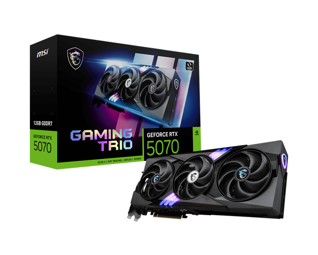
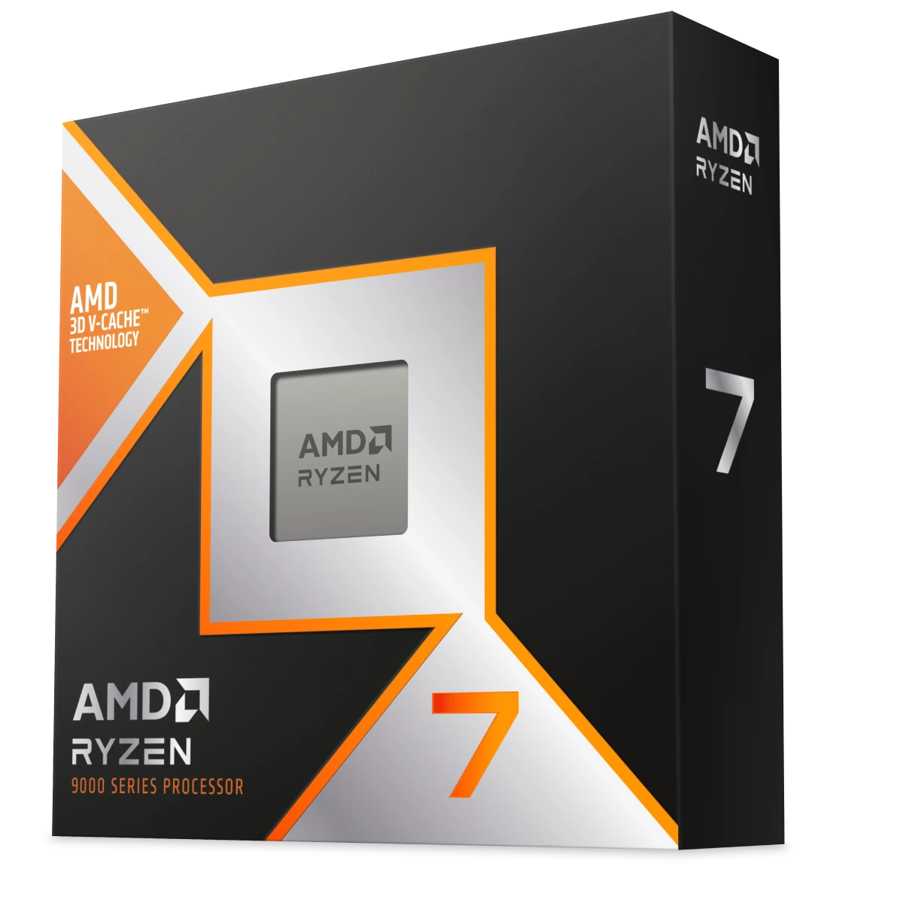

FIT PC / PARTS COLLECTION
내 취향으로 고르는
첫 번째 PC.
부품부터 성능까지, 한곳에서 비교하세요.


THE BUILD EDIT인터랙티브 데모실제 제품을 담은 비교용 카탈로그입니다. 11/08 확인가는 출처와 배송비를 표시합니다. 나머지는 최저가 오차를 검증하지 않은 예시 가격 또는 가격 미확인입니다. 게임 성능은 외부 실측·참고 추정·유사 모델 예시를 구분해 표시합니다. 구형 제품은 판매가 종료되었을 수 있습니다.
01
부품 둘러보기
※ 제조사·판매처의 실제 제품 사진입니다. 일부 CPU·메모리는 시리즈 대표 사진이며 정확한 외형은 제품 상세를 확인하세요.
02
사양 기반 참고 평가전체 성능 확인
적합한 용도, 성능 제약, 구매 전 확인사항을 정리했습니다.
게임 성능 확인실측 자료 · 근거가 있는 참고 추정 · 유사 모델 예시
FPS = 초당 화면 수 · 막대는 동일한 눈금 기준
등록 사양 기반 평가 · BIOS와 세부 장착 조건은 제조사 확인 필요